Journal
Join me. Explore and enjoy.
Welcome to my Lifestyle Blogazine! An inspiring collection of fun and transformative content designed to empower your Health, Wealth & Happiness. All 247 stories from the original Forbes Factor.
2019
 Meet Forbes · What's New? · April 8, 2019
Meet Forbes · What's New? · April 8, 2019Paula Adbul
Meeting Paula and getting to hang out backstage has been a dream. As a young girl I was beyond inspired by her videos, her tenacity and of course as a triple threat, her talent!
 SpinGym · What's New? · March 26, 2019
SpinGym · What's New? · March 26, 2019I LOVE SPINGYM!
Susan from Georgia is at Club Med and she is loving her SpinGym! Are YOU ready to become a Certified Team SpinGym Brand Ambassador? www.TeamSpinGym.com
 Business · What's New? · Work With Forbes · March 23, 2019
Business · What's New? · Work With Forbes · March 23, 2019Forbes Factor
When you’re stuck in life — where do you turn? Struggling with relationships? Your weight? Your job? check out www.ForbesFactorLive.com
 Business · Forbes Living Tv · What's New? · March 23, 2019
Business · Forbes Living Tv · What's New? · March 23, 2019What Makes a Website?
Enjoy this look back through old sites on the quest to best get the message out — leave your thoughts and comments below!
 Business · What's New? · March 23, 2019
Business · What's New? · March 23, 2019Favorite Podcast
I LOVE doing this show, meeting amazing guests and sharing inside tips and secrets with the world! My series is LIVE weekly on Voice America and then lives on iTunes — download, e…
 Healthy Living · SpinGym · What's New? · March 23, 2019
Healthy Living · SpinGym · What's New? · March 23, 2019ProWrestler LOVES SpinGym!
This is a monumental moment — Kurt Angle LOVES SpinGym! Watch THIS!Kurt Steven Angle is an American professional wrestler, actor and former amateur wrestler currently signed to pr…
 Business · Healthy Living · What's New? · March 22, 2019
Business · Healthy Living · What's New? · March 22, 2019Causes of obesity
New information from weight loss researchers and nutritionists shows that over 300,000 people die each year from complications resulting from obesity. Obesity is a major problem i…
Business · What's New? · March 20, 2019Bag o’ Bones
So many thoughts… so little time!What is YOUR favorite Forbesism?comment below!
 Healthy Living · Healthy Living Tips · Recipes · SpinGym · What's New? · March 19, 2019
Healthy Living · Healthy Living Tips · Recipes · SpinGym · What's New? · March 19, 2019Keto Diet yes/no?
So many people today are curious about the keto or ketogenic diet. Basically its is a very low-carb diet, designed can help you burn fat more effectively. Here you’ll learn how to…
 Business · Favorite Books · What's New? · March 19, 2019
Business · Favorite Books · What's New? · March 19, 2019Fun Making Money
One of my new favorite hobbies is making money in my sleep! To understand what I have been doing click HERE www.ForbesFriends.com and get your FREE copy of this book called Dot Co…
 Healthy Living · Recipes · What's New? · March 16, 2019
Healthy Living · Recipes · What's New? · March 16, 2019Sweet Snack: FRUIT
Curb your sweet tooth??Got a late-night sugar craving that just won’t quit? To satisfy your sweet tooth without pushing yourself over the calorie edge, even in the late night hour…
Travel With Forbes · What's New? · March 5, 20192019 Family Ski Trip: Beaver Creek
 Forbes & Friends · What's New? · March 4, 2019
Forbes & Friends · What's New? · March 4, 2019Top Model Cara
Cara Delevingne was always destined to be more than a model. And since she was launched in 2011 by Christopher Bailey at Burberry, Delevingne’s personality and talent has been rat…
Business · March 2, 2019Forbes Factor Live
If you haven’t heard of Forbes Factor Live – YOU are in for a treat — its a 5 Day Program I developed that encompasses learning to master your pitch, gain self-confidence, rid YOU…
SpinGym · What's New? · March 2, 2019The Many Faces of SpinGym
Because SpinGym is compact, lightweight and portable it can truly be used by anyone, anytime! Get YOURS now! www.SpinGym.com
Business · Forbes & Friends · What's New? · March 2, 2019Speaker David Brownlee
David Brownlee is one of the most viewed customer service, marketing and sales trainers on YouTube, and a global figure in business coaching, training and consulting . He is a bes…
Business · Daily Inspiration · What's New? · March 2, 2019Success Secrets!
Journal · January 20, 2019The Best of SpinGym: Manual
Journal · January 19, 2019Get Unstuck for 2019
One of the most exciting trainings I offer is Pitch Mastery/ ForbesFactorLive.com — coming up for 2019 is Feb 8th to 12th —
 Journal · January 19, 2019
Journal · January 19, 2019Secret Working Out at Home!
The best workout for your body is the one you do! Having a SpinGym handy anytime, anywhere will deliver you a heart pumping, metabolic boosting mini workout — proven studies show …
2018
Get Permission to Be Success NOW!
What's New? · November 27, 2018My Journey with ASA – The Movement!
Click edit button to change this text.
What's New? · November 25, 2018Do YOU love your skin??
Forbes Riley’s Secrets for Beautiful Skin! Ready for YOUTHFUL VIBRANT SKIN?
Business · What's New? · November 20, 2018Happy Thanksgiving 2018
Thanksgiving is a wonderful time – but only if you have friends family and budget — for so many it can be quite the troubling time from family to feeling loss to even struggling t…
What's New? · October 22, 2018The Fitness Destination
Click HERE to make money!!
Breakfast · October 21, 2018Protein Pancake #1
Protein Pancake #1 INGREDIENTS 1/4 cup raw oats 1/4 cup cottage cheese 1/2 scoop protein powder 1/2 cup egg whites DIRECTIONS Blend all the ingredients until a batter forms. Pour …
 Breakfast · October 20, 2018
Breakfast · October 20, 2018Bell Pepper EGGtastic!
Are YOU ready for awesome taste and a unique way to make eggs a visual delight!! When cooked in a frying pan the bell pepper softens slightly and caramelizes. It adds a wonderful …
What's New? · October 14, 2018SpinGym App
The best exercise EVER and now its an app available on iPhone AND Android… to get YOUR SpinGym www.ShopforbesRiley.com
What's New? · October 7, 2018Crush It On Camera
www.CrushitonCamerawithForbes.com Being able to communicate while a camera is on you is perhaps the hardest thing to do – used be just speaking in public – but when you realize as…
Products I Love · October 5, 2018FAST Keto Weight Loss
Mission Our mission is to show you that anyone can Bio-hack their own body, and we can Prüvit. However, to do this effectively requires knowledge, technology, self experimentation…
Journal · October 5, 2018Super Cool Shades!
Ray-Ban Women’s Erika Velvet RB4171 Sunglasses Product description CLICK HERE for YOURS Bold velvet frames add color and unexpected texture to these Ray-Ban sunglasses. Classic de…
Travel Tips · October 5, 2018Travel Packing Bags
G4Free Packing Cubes 6pcs Set Travel Accessories Organizers Versatile “Loved these cubes! Used them for a 3 week trip and it really helped keep things organized. Yeah! Loved all t…
 Travel Tips · October 5, 2018
Travel Tips · October 5, 2018TRAVEL BLOW OUT!
Professional Folding Blow Dryer for Travel 1300 to 1500W Negative Ion Small Hair Dryer Dual Voltage Lightweight,Mini 9×10 Inch Size Folding Blow Dryer Features The Folding Handle …
What's New? · October 1, 2018Crush It On Camera
www.CrushitonCamerawithForbes.com Being able to communicate while a camera is on you is perhaps the hardest thing to do – used be just speaking in public – but when you realize as…
 Forbes & Friends · October 1, 2018
Forbes & Friends · October 1, 2018Spago’s Barbara Lazaroff
Barbara Lazaroff is a producer, writer, and published author, mother of two sons, celebrated philanthropist, humanitarian and entrepreneur. She is the co-founder, with Jordan Robe…
SpinGym · What's New? · October 1, 2018SpinGym Global
What's New? · September 30, 2018Me & Jack
Based on a true story, conceived & written by Forbes Riley Imagine a world without health clubs, fitness equipment or even the jumping jack – well most of these can be attributed …
Forbes & Friends · September 29, 2018The Road to Joshua
Joshua and I met .fusion-accordian #accordion-19630-1 .panel-title a .fa-fusion-box{ color: #ffffff;}.fusion-accordian #accordion-19630-1 .panel-title a .fa-fusion-box:before{ fon…
Forbes & Friends · September 28, 2018Journey to Joshua
Travel With Forbes · September 28, 2018Dude Ranch
What's New? · September 21, 2018Become Part of Team SpinGym!
SpinGym fits in the palm of your hand and we are looking for Brand Ambassadors who want to make money, get fit and have fun! private send me your email and let’s get started!
Business · What's New? · September 20, 2018The BEST is YET to Come!
Random Thought for the Day — Leave YOUR Feedback!
Business · What's New? · September 19, 2018WHAT is FEAR Really??
What is fear? Fear is the feeling you get when you are afraid or worried that something bad is going to happen. As human, you will always feel fear. But you must be very careful n…
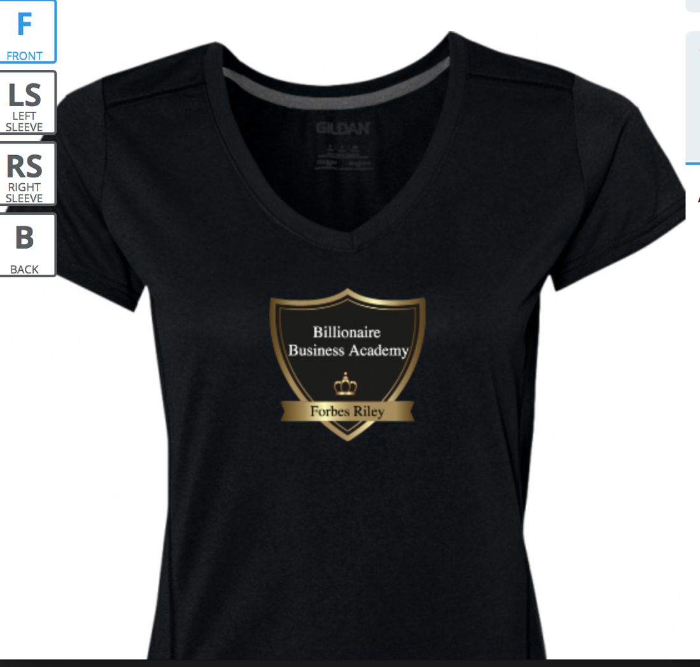
Business · Products I Love · What's New? · September 19, 2018Billionaire Business Shirts!
A brand is built around color, style, feel, attitude, consistency and SO much more. At Billionaire Business Academy Live Trainings we have the most amazing volunteers and staff – …
 Ask Forbes · Business · What's New? · September 9, 2018
Ask Forbes · Business · What's New? · September 9, 2018Q & A with Forbes Riley – on Business, Health, Fitness & Life
Q & A with Forbes Riley written Andy Charalambous Profession: TV Host, CEO SpinGym, author, speaker, actress Honors & Awards: National Fitness Hall of Fame 2010, Moxie Award Winne…
 By Forbes · What's New? · September 5, 2018
By Forbes · What's New? · September 5, 2018My First Book Launch with Virdition
Have to admit, it is very cool launching my first book, Virdition. It took my co-author, Will Quinones and I almost 3 years to complete this and finally we get to show the work. N…
SpinGym · What's New? · September 4, 2018Best Beach Workout EVER!
How many times have you just wanted to get a heart pumping quick workout in but you’re stuck in a hotel with a stuffy, tiny little room they call a gym, or you’re in a plane, car …
Forbes & Friends · What's New? · September 4, 2018Celebrating Elaine & Jack Lalanne
I had the most amazing mentors in life – Jack Lalanne and his amazing wife Elaine!
Forbes & Friends · What's New? · September 4, 2018My friend, Neil Simon
Back in 1985, I was doing the Broadway Show, The Marriage of Figaro co-starring Christopher Reeve. I had a chance to hang with a lot of the young stars working in New York City an…
What's New? · September 3, 2018My Mentor Jack Lalanne ~ The King of Fitness
Jack LaLanne had a lot of firsts in the fitness and health industry Here are some of the biggest! Opened the first modern health spa Invented the first Leg extension machine Inven…
What's New? · September 3, 2018Pitch Master Class with Forbes Riley
Pitch Class with Forbes Riley – a 2 Day Business Transforming experience www.ForbesFactorLive.com Learn to Get What YOU want Increase YOUR revenue Master YOUR Message and Build YO…
What's New? · July 22, 2018Forbes Riley’s New Best Seller: Virdition
Morgan James’s new release “Virdition: The Secret to Fast Tracking YOUR Path to Stardom” by Forbes Riley and Will Quinones is Hollywood’s new handbook for success. As Uber impacte…
Forbes & Friends · June 24, 2018Amy Lyndon- Hollywood Acting Coach
Amy Lyndon and I have been friends for EVER!! We were actresses together in LA and traveled to the Sundance Film Festival to pursue our dreams. Today she is one of Hollywood’s Top…
Daily Inspiration · June 5, 2018Authenticity
Business · What's New? · May 31, 2018BreakThrough Healing with Forbes Factor Live by Forbes Riley
Join the Healing Breakthrough Movement Your time is now! www.ForbesFactorLive.com Tickets: https://bit.ly/2sl5nhk
 Healthy Living · Meet Forbes · SpinGym · What's New? · May 29, 2018
Healthy Living · Meet Forbes · SpinGym · What's New? · May 29, 2018David “Avocado” Wolfe
David Wolfe — Health, Eco, Nutrition, and Natural Beauty Expert Today is the best day ever. That is one of David’s Favorite quotes. He is a genuine inspiration and I’m thrilled to…
Business · What's New? · May 28, 2018Forbes is an Entrepreneur on FIRE!
Full Transcript John Lee Dumas: Thank you for joining me for another episode of EntrepreneurOnFire.com, your daily dose of inspiration. If you enjoy this free podcast, please show…
What's New? · May 21, 2018Testimonials from Forbes Factor Live: Cody Iverson
What's New? · May 21, 2018Forbes Riley + Home Shopping + Perfect Pitch
My home for more than 28 years – live home shopping around the world. One of the secets is that you MUST have the Perfect Pitch! How to Develop Your Perfect Pitch Okay – you’ve in…
What's New? · May 21, 2018Starring in the New TV Series: Transcend
“Life should be simple for Max, he’s only twelve. It’s not though, not when he comes from a family of seers and he’s getting powers no one told him about. Not to mention, Kylie th…
 What's New? · May 21, 2018
What's New? · May 21, 2018Forbes Riley: Mom & More interview
Name: Forbes Riley Kids: Twins: Makenna & Ryker (age 15) Occupation: TV Host, Health & Fitness Expert, Speaker, Author, CEO/SpinGym Hometown: Oceanside, New York 1. What are the t…
Forbes & Friends · May 21, 2018Luke Baker: UK Fitness Star
at a Pub in London celebrating my birthday
Forbes & Friends · March 18, 2018Aly Michaels
The Stunner from Down Under!
Let's Talk Business · What's New? · March 11, 2018Overcome to $uccess
Overcome to $uccess By Forbes Riley You are the sum of the obstacles you overcome: If you are lucky to live long enough, you’re likely to go through some pretty bad stuff, whether…
2017
My Mom & Dad at Christmas
What's New? · November 28, 2017My Mentor College Professor David Richman
When I first got to Los Angeles I had stars in my eyes. Even though I never got the lead in any of the high school plays, I had been given faith, by a man with no sight. My colleg…
What's New? · November 20, 2017Fab Fun at Charity Event!
At the Icon Event 2017 I was a guest presenting give Shark Tank’s Kevin Harrington his award for Mentorship. Also attending were my amazing friends from Paula Abdul, ‘N Sync Lance…
What's New? · November 19, 201710X Interview with Grant Cardone – so worth watching!
Join me at the 10x convention this Feb 22-24 in Vegas! Here is my special code https://10xgrowthcon.eventbrite.com/?aff=forbesriley
What's New? · November 18, 2017David Cassidy Partridge Family
I’m so sad — he was my first CRUSH! David Cassidy, the wildly popular ’70s heartthrob who shot to fame when he starred and sang in TV’s “The Partridge Family,” is in critical cond…
 Forbes & Friends · November 16, 2017
Forbes & Friends · November 16, 2017Celebrity Trainer David Kirsch
Had the amazing pleasure to meet David at a Speaker Training I co-hosted in Las Vegas — he blew me away with his insight, talent, and heart! No wonder A-List celebrity flock to hi…
SpinGym · SpinGym News · What's New? · November 10, 2017Make $$ Money with SpinGym
The $ecret to $elling $pinGym in Just 90 Seconds conceived & created by Forbes Riley To sell a SpinGym in 90 Seconds it is a Provenm Simple, Easy to Follow 3 -step System FIRST – …
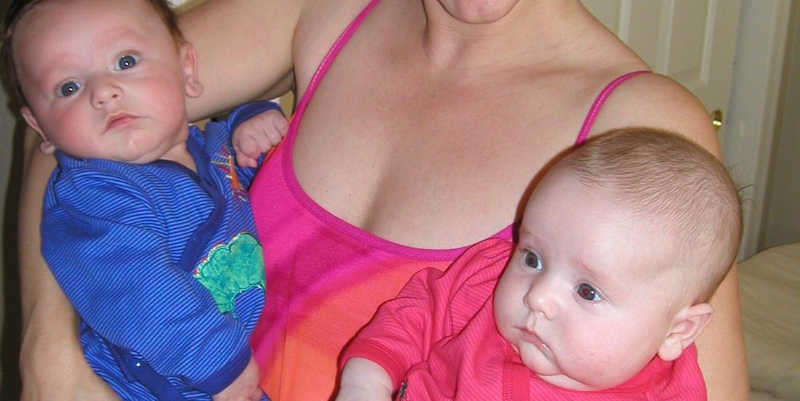
What's New? · November 3, 2017Motherhood at EVERY AGE!
I loved being pregnant with my twins — greatest experience of all! And this magazine was such a crowning achievement — my first magazine cover and I’m 208 lbs!
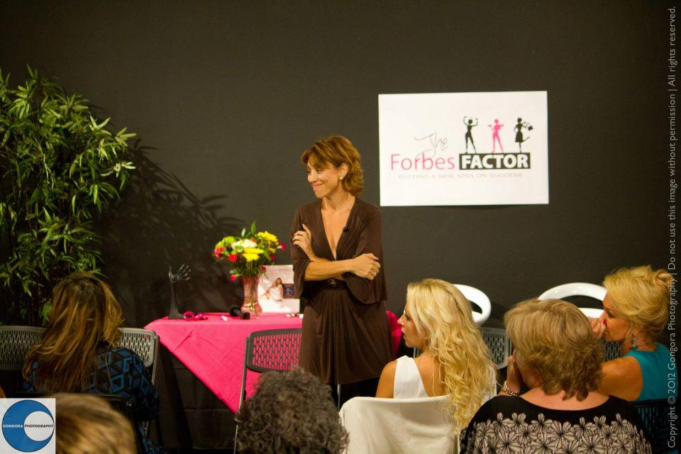
About Events · What's New? · November 3, 2017Launching Forbes Factor Live
When we first purchased the building that was to become the Forbes Riley production studios it was a bit of a gamble and leap of faith into the unknown. I had longed dreamed about…
What's New? · November 3, 2017Forbes Riley – INSPIRATION in Action
This video from the Secret Knock convention in Chicago is definitely one of the most Inspiring interviews I have EVER given! Spend some time here, and I promise that you will be c…
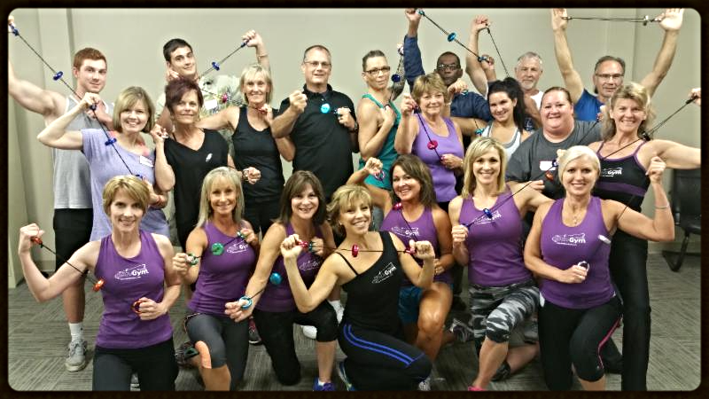
SpinGym · October 28, 2017Team SpinGym
SpinGym Certification class is now offering fitness buffs and fitness curious an exciting chance to earn extra money, get fit and have more than they ever imagined promoting, teac…
 SpinGym News · What's New? · October 27, 2017
SpinGym News · What's New? · October 27, 2017From the Heart
Every once in a while you just meet someone who dramatically changes your life. I met Forbes through a mutual Los Angeles acquaintance and we began to know each other a little bet…
Meet Forbes · September 28, 2017Forbes Riley
World-renowned fitness and wellness expert and National Fitness Hall of Fame inductee, Forbes Riley continues to revolutionize the exercise world with the completely portable Spin…
Forbes & Friends · What's New? · September 21, 2017Movie Producer Brian Grazer loves SpinGym
I was lucky enough to run into Brian backstage in NYC at Fox & Friends. He asked about SpinGym, tried it, loved it and even posted it to Twitter! He co-founded Imagine Entertainme…
Travel · Travel With Forbes · What's New? · August 24, 2017Alaska Trip
I think everyone has that “Alaska Cruise” trip on their bucket list – I sure did and grateful I didn’t wait until I was too old to really enjoy it! Our journey with the twins was …
 What's New? · August 22, 2017
What's New? · August 22, 2017Growing Up Riley
Ryker loves his mommy
Travel · What's New? · August 21, 2017Best Beach Get-a-Way! Riley’s Retreat
Best Vacation EVER – simply click HERE for Fun in the Sun at Riley’s Retreat!
What's New? · June 16, 2017Forbes Factor Radio
Forbes Factor Radio – Wednesdays 3pm eastern featuring host Forbes Riley The Forbes Factor is YOUR formula for a Fun, Fit and Fabulous Life! Tune in for the latest in health, weal…
Let's Talk Business · Podcasts · March 9, 2017Forbes Riley: The Sales Pitch Business Podcast
Forbes Riley: The Sales Pitch Business Podcast is the subject of our podcast today and its INFORMATIVE and chock full of USEFULL BUSINESS tips — Listen, Learn and Let’s make $$$$ …
Desserts · Forbes & Food · March 8, 2017Yes, Forbes Riley has her Chocolate CAKE, and eats it too!!
My favorite Chocolate Cake Every once in a while you have to indulge! Just try to use the best ingredients, real chocolate and enjoy!
 Journal · March 7, 2017
Journal · March 7, 2017Angela Dean – Fashion Designer
Celebrity Oscar designer and Hollywood Actress A-list Designer, Angela Dean is taking the world by storm with critically-acclaimed designs & a loyal following of Hollywood’s top c…
Favorite Books · January 20, 2017Books to Read in 2017 – Your Future Self Will Thank You For
To learn from other leaders in a space you are in, or to get motivated by celebrities or thought leaders you look up to, or even to ignite your imagination through those non-ficti…
Forbes Favorites · January 12, 2017SpinGym in the NEWS!
Journal · January 11, 2017Law of Attractions: Michael Beckwith
What a treat to spend time with the most inspirational! About the Dr. Michael Beckwith Dr. Michael Bernard Beckwith is the founder of the Agape International Spiritual Center, a t…
2016
SpinGym in the News
Praised by Fox News as the hottest Fitness Sensation, it continues to grow in popularity! www.ShopForbesRiley.com
Let's Talk Business · Podcasts · Press · SpinGym News · What's New? · November 18, 2016Forbes Riley’s Story Shines in the Huffington Post
Forbes Riley, Former Actress Finds A New Role And Spins It Into Millions May 30, 2015 FORBES RILEY One of the reasons I started my website is that I wanted a place for women to co…
Daily Inspiration · November 17, 2016Be Somebody!
Travel · Travel With Forbes · November 10, 2016Park City, Utah – New Years 2016
Had a GREAT Ski Trip with my twins – stayed at the Canyons Park City Fun on the slopes — its cold in January, crisp and alive – we had so much fun! Makenna focused on learning to …
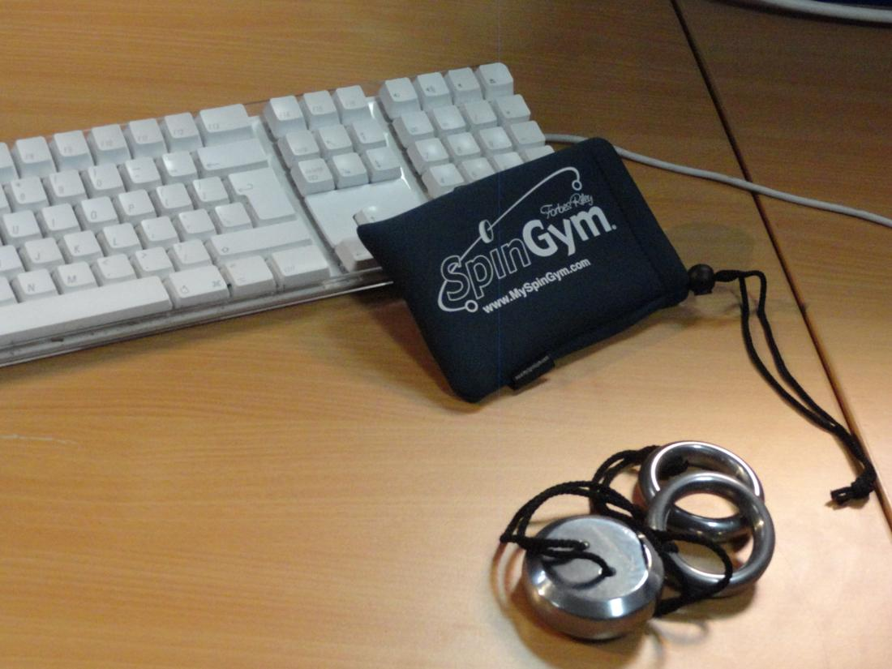
Business · November 1, 2016SUCCESS in BUSINESS
Success in Business 5 amazing clues – because success leave clues yes?! 1. Take a simplistic approach Listing down your tasks doesn’t have to be overwhelming. You don’t need a lot…
 Behind the Scenes · What's New? · October 21, 2016
Behind the Scenes · What's New? · October 21, 2016Forbes Living in STYLE!
Forbes Living was created with the knowledge that every unique product deserves an audience. Hosted by TV celebrity Forbes Riley, this groundbreaking talk show combines the most h…
Let's Talk Business · October 21, 201610 Networking Tips
10 Tips for Successful Networking Networking and Follow-Thru is the true key to relationship building and ultimate success in business. Networking is about being genuine and authe…
SpinGym News · Testimonials · October 20, 2016SpinGym Fitness Super Model – Myles Leask
ABOUT INFO@MYLESLEASKFITNESS.COM Welcome to mylesleaskfitness.com I have launched this site to try and help others follow the lifestyle I love its more than just lifting weights a…
SpinGym News · What's New? · October 15, 2016Doctors LOVE SpinGym Rehab!
 Healthy Living Tips · September 20, 2016
Healthy Living Tips · September 20, 2016Get Rid of Cellulite
Tips to Get Rid of Cellulite: 1. You need to build your collagen structure with amino acids such as prolein and glycein or collagen (consume foods like bone broth) 2. Vitamin C Ri…
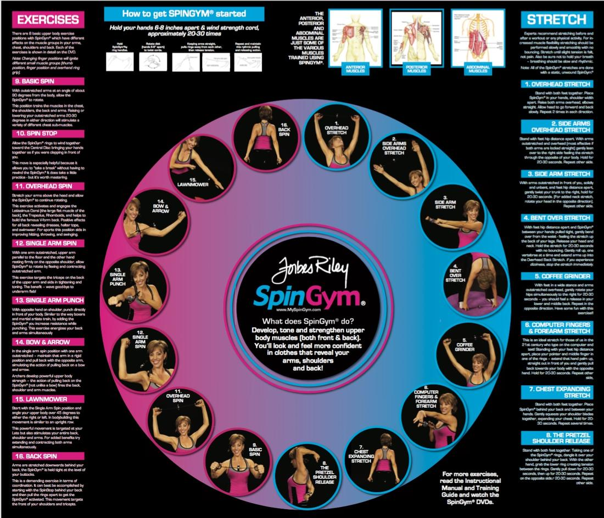
SpinGym News · September 19, 2016SpinGym Wall Chart
Best way to workout and remember exercises with SpinGym To get yours visit www.ClubSpinGym.com
SpinGym · What's New? · September 12, 20165 Top Medical Reasons to SpinGym
Submitted by Dr. L. Krudo As a doctor, I use a “whole person approach” when taking care of my patients. By combining the very best hands-on-technique, state of the art physiothera…
 Journal · September 10, 2016
Journal · September 10, 2016Forbes NEW Movie – Paying Mr. McGetty
Last year’s momentous run of director Michael Baumgarten’s anti-bullying drama, The Martial Arts Kid, is now paving the way for Traditionz Films’s newest contribution to the film …
About SpinGym · SpinGym News · September 10, 2016SpinGym INFOMERCIAL!
Behind the Scenes · Let's Talk Business · September 10, 2016Power of Video Marketing
THE POWER OF VIDEO MARKETING As someone who has worked in infomercials, live home shopping and commercials for more than 30 years – I know first hand that ideo marketing is the le…
SpinGym News · September 10, 2016SpinGym SlimDown Before & Afters
Soshanna
Journal · September 7, 2016Jack Lalanne’s 96th Birthday
The honor of a Lifetime I spent 8 years working alongside the fitness legend Jack Lalanne and his wife Elaine – what an honor – but to be invited to celebrate his 96th birthday at…
Behind the Scenes · SpinGym News · September 6, 2016From the Heart
Every once in a while you just meet someone who dramatically changes your life. I met Forbes through a mutual Los Angeles acquaintance and we began to know each other a little bet…
Forbes Riley Studio
Nestled in St Petersburg Florida, just minutes from Tampa and down the road from HSN is the 5000sq foot boutique studio known as ForbesRileyStudios.com We shoot tv series, infomer…
Let's Talk Business · September 5, 2016Who is CEO Forbes Riley
Forbes Riley Shares her Thoughts and Offer Advice on Business, Health, Fitness and Life written Andy Charalambous Full Name: Forbes Riley Profession: TV Host, CEO SpinGym, author,…
Innovations · September 5, 2016Thomas Edison – Father of Inventions
The father of invention and innovation! Be courageous. I have seen many depressions in business. Always America has emerged from these stronger and more prosperous. Be brave as yo…
 Journal · September 4, 2016
Journal · September 4, 2016Launching Forbes Factor
When we first purchased the building that was to become the Forbes Riley production studios it was a bit of a gamble and leap of faith into the unknown. My husband and I had longe…
So WHO is Forbes Riley?
If you look up in the dictionary the words “perseverance and determination”, there is a picture of Forbes Riley. As a little girl she overcame a disfiguring accident, having her m…
 Healthy Living · SpinGym News · September 1, 2016
Healthy Living · SpinGym News · September 1, 2016To Lose 100lbs
Obesity is a growing problem in this country and around the world. Between processed food, sedentary lifestyle and stress – struggling with weight issues is more prevalent than ev…
 Healthy Living · September 1, 2016
Healthy Living · September 1, 2016Fit After 60!
Barb Cetrone – HSN fitness model extraordinaire in her late 60’s! One of her secrets – SpinGym she’s been using SpinGym for the past 6 years and her arms look FANTASTIC www,ClubSp…
 Healthy Living · September 1, 2016
Healthy Living · September 1, 2016Tips to Becoming a Fitness Model
Tips & Tricks Getting into shape is hard for many of us – but image wanted to become a professsional fitness model. Now I personally have never got to that level — but I have hire…
Journal · August 22, 2016Family…
It is amazing to me how time flies — the summer vacation flew by, I’ll sneeze and it will be Christmas. I am just taking a quiet reflect on the choices I’ve made – some good, some…
Business · August 21, 2016Power of the Handshake
What your handshake says about you! As a golden rule, though, a good handshake—one that won’t strike us as being too weird, anyway, or leave us ruminating on it a decade later—is …
Let's Talk Business · August 21, 201610 Networking Tips
10 Tips for Successful Networking Networking and Follow-Thru is the true key to relationship building and ultimate success in business. Networking is about being genuine and authe…
 Healthy Living · August 20, 2016
Healthy Living · August 20, 2016Great Skin
10 Things Women With Perfect Skin Do Every Day! Waking up flawless is all in a few key steps. 1. Uses cleanser for your skin type. For oily or acne prone skin, a salycylic gel or …
Travel With Forbes · August 5, 2016Flying Trapeze
As many of you know, I spent the better part of my 20’s working at Club Med’s all inclusive resorts around the world. By far one of the best things I learned and perhaps a reason …
 Healthy Living Tips · July 28, 2016
Healthy Living Tips · July 28, 2016SpinGym Bikini Diet Plan
Secrets to Getting a Bikini Party – part workout, part what you eat —
Journal · July 7, 2016National Fitness Hall of Fame
In 2010 I was inducted…. “Fitness Legends Gather for Memorable Occasion” March 14, 2010 – Addison, Illinois Many legendary fitness professionals were on hand to help celebrate the…
Journal · July 5, 2016My Favorite Food Infomercial
I’ve hosted a lot of infomercials in my time, but this was by far one of my ALL time favorites – Why? I got to include my whole family for the very first time. The product was a f…
Journal · July 5, 2016Fun in Vegas on FOX!
Had a blast SpinGyming with host and crew of the Vegas morning talk show MORE in Las Vegas
Products I Love · July 5, 2016Love My Body – Clothes by Forbes Riley
I launched my very first collection of Athleisure Fitness/Lifestyle clothing on HSN love that you can actually look like you’ve lost 10 pounds just by having the right cut and des…
 Journal · July 5, 2016
Journal · July 5, 2016Be Fearless
We all have fear – but its important to REDEFINE – False Evidence Appearing Real! Overcoming fear requires a growth mindset; an attitude that we can grow and change if we choose. …
Journal · July 5, 2016Pregnant with Twins!
Best thing I EVER did in Life – 9 months of creating the most amazing twins – I was however a BIT surprised at exactly how big I got…
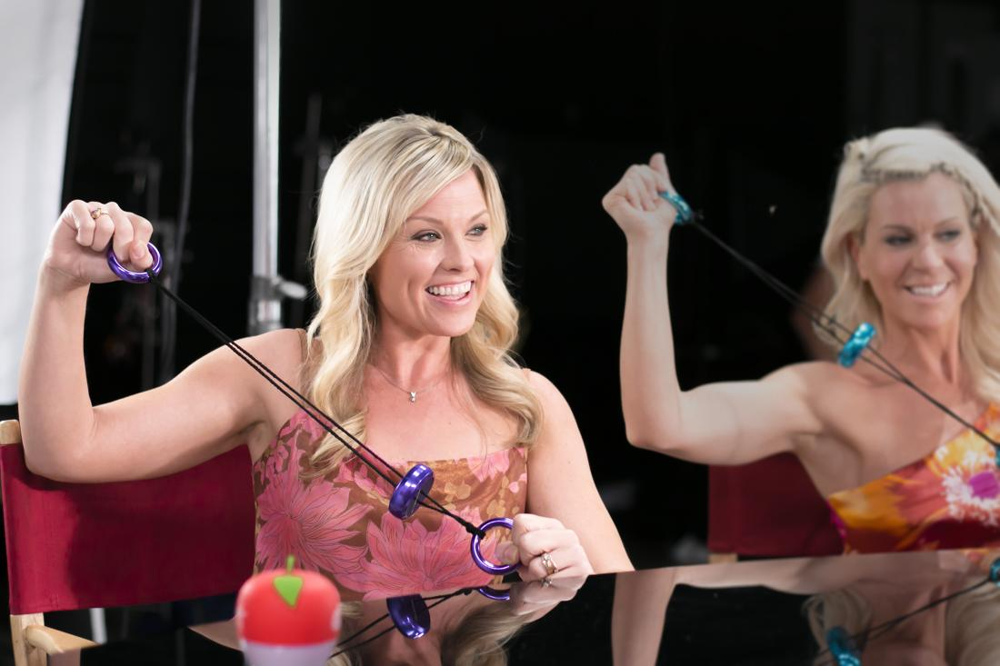
SpinGym News · July 4, 2016SpinGym on set!
SpinGym is so compact and portable – its great for actors and crew on set — from movies and tv to infomercials – you’ll find SpinGym in A-List dressing room, travels and on make-u…
Journal · July 2, 2016Lady in Motion
The perfect Clothes for the Lady on the GO! and trust me, we know who we are!
 Press · June 27, 2016
Press · June 27, 2016ePregnancy Magazine
I loved being pregnant with my twins — greatest experience of all! And this magazine was such a crowning achievement — my first magazine cover and I’m 208 lbs!
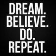
Daily Inspiration · June 19, 2016Dream. Believe. Repeat
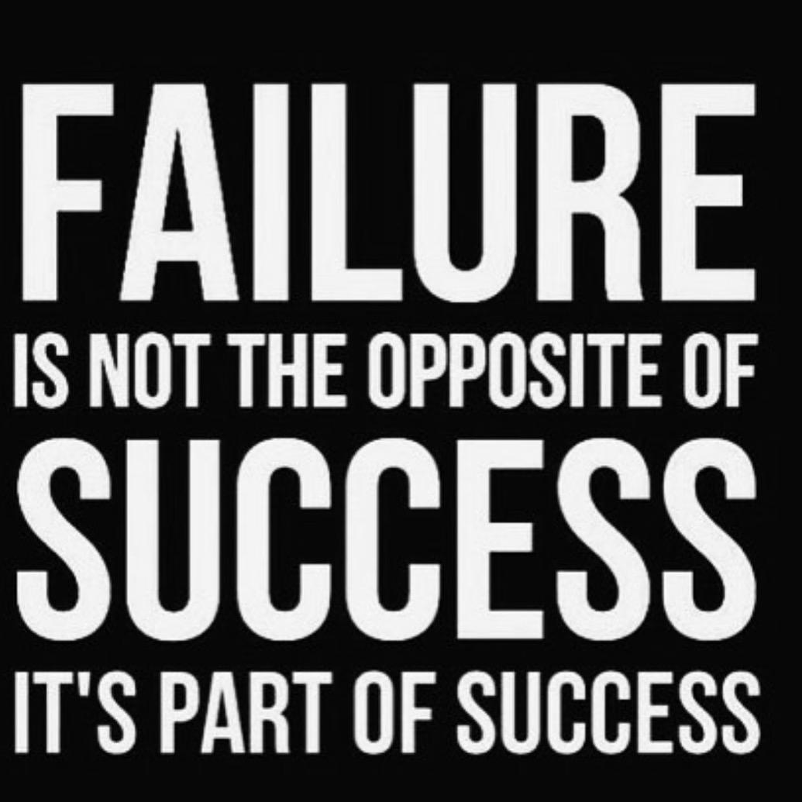
Business · Daily Inspiration · Innovations · June 19, 2016Failure is NOT the Opposite of Success
 Daily Inspiration · Forbes & Food · Healthy Living Tips · June 19, 2016
Daily Inspiration · Forbes & Food · Healthy Living Tips · June 19, 2016Can’t Exercise Out of a BAD Diet!
Travel · Travel With Forbes · June 19, 2016Best Travel Fitness Workout: SpinGym
Imagine get fit before, after and WHILE you travel – That is the beauty, ease and convenience of the SpinGym. No matter what kind of trip you’re taking, there’s one thing is certa…
 Healthy Living · SpinGym · June 16, 2016
Healthy Living · SpinGym · June 16, 201610 Minute SpinGym
If you’ve got 10 minutes, you’ve got a workout. That’s the consensus among exercise researchers, who are finding full benefits from abridged workout circuits. In fact, some resear…
 Business · June 16, 2016
Business · June 16, 2016Success Masterminds
mas·ter·mind ˈmastərˌmīnd/ noun a person with an outstanding intellect. “an eminent musical mastermind” synonyms: genius, mind, intellect, author, architect, organizer, originator…
Journal · June 16, 2016Forbes Riley Tips for Success
Products I Love · SpinGym News · June 15, 2016SpinGym Food Plan
Food plan versus DIET — its most important to really understand what food is as opposed to a “diet” — diets are something you go on and off – but food is something you’ll eat the …
Journal · June 14, 2016One of my first acting demos…
We all have to start somewhere….
Journal · June 14, 2016Forbes Riley Tips for Success
Enjoy my inspirational videos!!
Journal · June 14, 2016Be Fearless
Infomercials started in the early 90’s and I was blessed to be a part of the most amazing industry — however I do remember the first time I saw a commercial – that wasn’t 2 minute…
Forbes & Food · Healthy Living Tips · Juices & Smoothies · My Life in Video · June 7, 2016Getting Kids to Juice!
People always ask me, ‘How do you get kids to eat healthy?” The answer is simple – feed them healthy – may sound easy but before most children are 2 years old they have been inund…
 Healthy Living · Products I Love · SpinGym News · June 7, 2016
Healthy Living · Products I Love · SpinGym News · June 7, 2016SpinGym airs on HSN
Experience the SpinGym The most revolutionary new handheld device specially designed to supply constant force during your workout, giving you a total body workout like no other. T…
Journal · June 6, 2016SpinGym Jingle & Justin
One of our fans sent in this jingle and I just fell in love with it – please leave me your comments!
 Forbes & Food · Healthy Living · June 5, 2016
Forbes & Food · Healthy Living · June 5, 2016Powerful Liver Cleanse
Symptoms Your Liver Isn’t Functioning Optimally If you have recently noticed any of the symptoms mentioned below, you could be suffering from impaired liver function. It is partic…
 Journal · June 5, 2016
Journal · June 5, 2016What have YOU Forbes’d lately?
How do you manifest what you want in life – my philosophy – Forbes It! Watch the video and leave your comments below! www.FunwithForbes.com
Forbes & Food · Healthy Living · Healthy Living Tips · SpinGym · June 5, 2016Forbes 5 Tips for Health (yes, in the car!)
I seem to get very inspired while I’m in the car – yes, I’m hands free – and no I do not recommend doing this! But I get so darn inspired so enjoy! Clean out your closet Shop your…
 Journal · June 5, 2016
Journal · June 5, 2016Growing Up Ugly…
I wish I had known truly that I was pretty way back when — this was one of my very first headshots – and they didn’t have photoshop back then — but growing up with frizzy hair, a …
 Behind the Scenes · Forbes & Friends · June 2, 2016
Behind the Scenes · Forbes & Friends · June 2, 2016Jeff Timmons – 98 Degrees – Boy Band!
Why am I a fan? Jeff Timmons is talented, funny, charming, can sing and did you SEE his biceps. Its also GREAT that he loves SpinGym JEFF TIMMONS Jeff Timmons is the founding memb…
Journal · June 1, 2016Launching Forbes Factor
When we first purchased the building that was to become the Forbes Riley production studios it was a bit of a gamble and leap of faith into the unknown. My husband and I had longe…
Daily Inspiration · June 1, 2016Acceptance
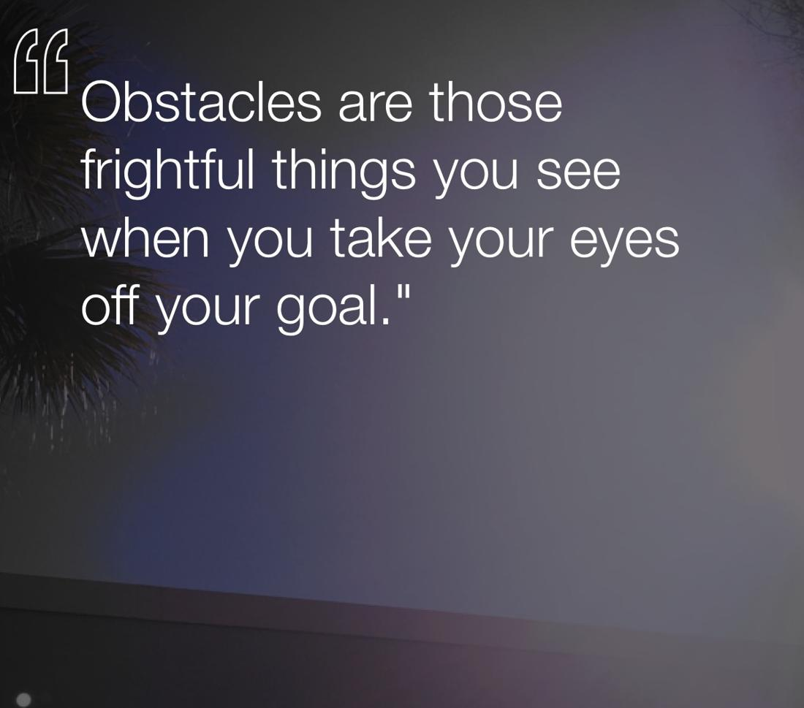
Daily Inspiration · June 1, 2016Obstacles
 Behind the Scenes · Forbes Living Tv · Products I Love · May 30, 2016
Behind the Scenes · Forbes Living Tv · Products I Love · May 30, 2016Waist Shapers!
Waist training is a gradual process of waist reduction using our corset. The waist training practice came to prominence in Victorian times .Wearing a waist cinching corset, exerci…
 Healthy Living · Healthy Living Tips · May 28, 2016
Healthy Living · Healthy Living Tips · May 28, 2016Innovative Turkeys!
What a fun healthy and colorful alternative for the Thanksgiving Holiday season!
Giving Back · May 27, 2016Mr. Strong Foundation
Helping Kids! Michelle Morales -Founder and President Michelle M. Morales was born and raised in the Tampa Bay area and is a graduate of University of South Florida, with a BA in …
 Forbes & Food · Healthy Living Tips · May 2, 2016
Forbes & Food · Healthy Living Tips · May 2, 2016A pineAPPLE a day!
Doctors talk about an apple a day well – good news for Hawaii – Pineapples are IDEAL for Weight Loss! 1. Fresh, raw pineapple contains an enzyme called bromelain that aids digesti…
SpinGym · May 2, 2016Exercise Excuse Buster
Why is SpinGym the quickly becoming known as the “Exercise Excuse Buster?” Beause you can always find five minutes time! Hardworking people often can’t find time or inclination to…
Journal · May 1, 2016Who’s Hot – Theatre Actress
 Forbes & Friends · May 1, 2016
Forbes & Friends · May 1, 2016Rali Ivanova & Noemi Olah at the Studio!
Fit and Fit at Forbes Riley TV Studios! Come take a backstage look at sneak into my dressing during a fitness photo shoot – just one of the amazing and fun things we do here in St…
 Forbes & Friends · Meet Forbes · May 1, 2016
Forbes & Friends · Meet Forbes · May 1, 2016Movie Producer Brian Grazer loves SpinGym
I was lucky enough to run into Brian backstage in NYC at Fox & Friends. He asked about SpinGym, tried it, loved it and even posted it to Twitter! He co-founded Imagine Entertainme…
Travel · Travel With Forbes · May 1, 2016Welcome to Riley’s Retreat!
Come Relax under the SUN! The Space Best of both worlds–waterfront tranquil bayside setting with a gorgeous beach directly across the street. Guest Access Full access to the beach…
Meet Forbes · April 30, 2016I’m not really a Doctor!
Love the Line – I’m not really a doctor, I just play one on TV! It must have been amazing to work on the set of ER or Chicago Hope and play doctor – well this week I got to “play”…
Meet Forbes · SpinGym · SpinGym News · April 26, 2016Nurses love Spingym
We Love Nurses! For industries with aging employees, such as nursing, the goal of a healthy workforce may be even more important to mitigate health changes associated with aging a…
Let's Talk Business · April 20, 2016Forbes Riley: Financial Wealth Management
 Behind the Scenes · Forbes Living Tv · April 17, 2016
Behind the Scenes · Forbes Living Tv · April 17, 2016Forbes Riley TV Studios
This was an amazing and blessed moment in my life as we opened the Forbes Riley TV Productions Studios in St Pete – its was the beginning of a new and exciting time in my life! ht…
Forbes & Food · Recipes · What's New? · April 16, 2016Cooking from the Heart – TV Pilot
What a treat to work with chef and cardiac interventialist Dr Mike Fenster – he is called the GrassRoots Gourmet Innovative Tasty Food, FAST ! Follow us and Dr Mike and I created …
 Breakfast · Recipes · Snack · April 16, 2016
Breakfast · Recipes · Snack · April 16, 2016Paleo Pumpkin Bread
This Paleo Pumpkin Bread recipe is a staple for the holidays. It’s gluten-free, dairy-free, extremely moist, deliciously spiced and smells amazing coming out of the oven. It’s a o…
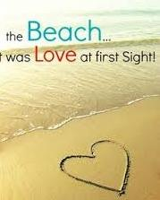
Travel · Travel With Forbes · April 15, 2016Scientific Reasons to GO TO THE BEACH!
BEACH, SUN, FUN and YOUR HEALTH! 1. You’re more relaxed along the coast Look at the picture. Stress free, right? The very sight of it can subconsciously calms you… Pictures of urb…
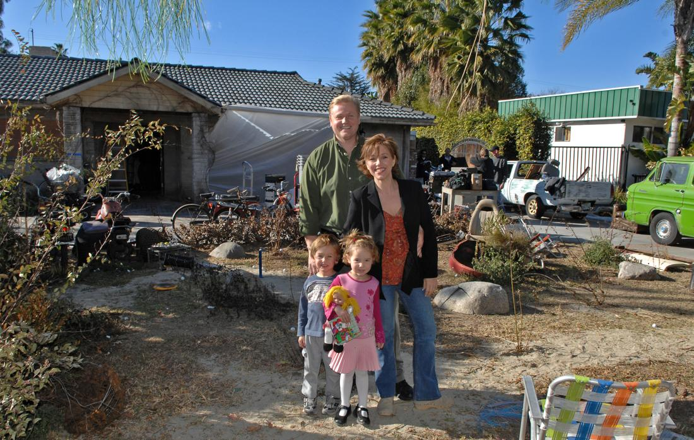
What's New? · April 13, 2016Die Hard explodes my House!
This is a unique Forbes Riley story about how I chose to remodel my Los Angeles house – by blowing it up! #fusion-testimonials-1 a{border-color:#747474;}#fusion-testimonials-1 a:h…
 Throwback with Forbes · April 13, 2016
Throwback with Forbes · April 13, 2016Forbes Riley STARS in Fox-TV pilot FASHION HOUSE
Giving Back · April 5, 2016Big Brothers/ Big Sisters
For more than 100 years, Big Brothers Big Sisters has operated under the belief that inherent in every child is the ability to succeed and thrive in life. As the nation’s largest …
Giving Back · April 5, 2016Dress for Success
Dress for Success is an international not-for-profit organization that empowers women to achieve economic independence by providing a network of support, professional attire and t…
 Behind the Scenes · April 3, 2016
Behind the Scenes · April 3, 2016Forbes Riley Production Studios
Its Very exciting OWNING a TV Studio WELCOME TO THE STUDIO WHERE IDEAS COME TO LIFE 5000 sq. ft. full-service television, media and production hub, complete with a 2500 sq. ft. so…
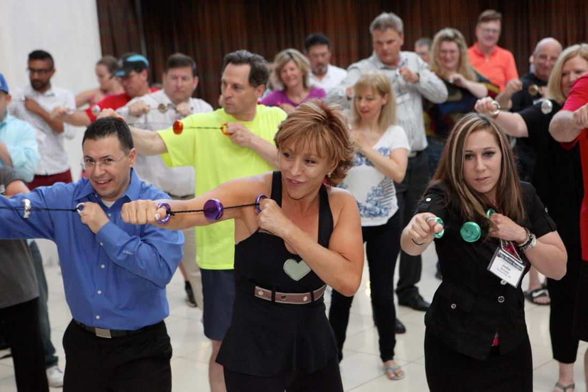
SpinGym · April 2, 2016SpinGym Class is Invigorating!
SpinGym class is invigorating, fun and empowering. Its hard to imagine that such a small product can have such a huge impact on people’s life but that is the journey of Forbes Ril…
Journal · March 2, 2016Forbes Riley Words of Wisdom — in a car!!
SpinGym News · February 27, 2016Fit Girls of SpinGym
My Amazing Team June Kittay, Yvette Feinberg, Cara Dubov from 22 to 62 — SpinGym really is breaking the age barrier when it comes to fitness!~
My Life in Video · February 12, 2016Forbes Riley – Reality TV STAR!
Move over Kardashians! No more TRASH tv – let’s learn, grow, inspire and aspire!
 Journal · February 11, 2016
Journal · February 11, 20169 Words Women Use…
9 WORDS WOMEN USE… (1) Fine: This is the word women use to end an argument when they are right and you need to shut up. (2) Five Minutes: If she is getting dressed, this means a h…
Forbes Riley: Businesswoman on Fire
BUSINESSWOMAN ON FIRE INTERVIEW WITH FORBES RILEY Forbes Riley 1. Why did you choose to enter your present field? I wish I could say that I was always interested in helping others…
Travel With Forbes · January 30, 2016Park City, Utah – New Years 2016
Had a GREAT Ski Trip with my twins – stayed at the Canyons Park City Fun on the slopes — its cold in January, crisp and alive – we had so much fun! Makenna focused on learning to …
 Healthy Living Tips · What's New? · January 12, 2016
Healthy Living Tips · What's New? · January 12, 2016SpinGym Sacramento
Good Morning Sacramento – I love being on morning talk and the cast and crew on set today we exceptional!
Let's Talk Business · January 5, 2016Warren Buffet
I did not write this blog but it needs to be shared… Warren Buffett Says to Invest as Much as You Can in This Warren Buffett is considered to be one of the greatest investors that…
Journal · January 3, 2016New Years Resolutions 2016
Its new year 2016! New Year, healthier you New Year’s resolutions are a bit like babies: They’re fun to make but extremely difficult to maintain. Each January, roughly one in thre…
SpinGym News · January 1, 2016SpinGym with Fitness Superstar Sydney Benner
SpinGym truly is the MOST versatile Fitness Product on the Planet What makes SpinGym so unique is that it is compact, portable and versatile. Whether you are going for a walk or s…
Healthy Living · Healthy Living Tips · January 1, 2016Innovative Turkeys!
What a fun healthy and colorful alternative for the Thanksgiving Holiday season!
 Healthy Living · January 1, 2016
Healthy Living · January 1, 2016The Power of Juicing
There are many health benefits of drinking freshly juiced fruits and vegetables. To start it’s a dynamic way to add fresh nutrients that you normally wouldn’t eat because so many …
My Life in Video · January 1, 2016Forbes in Action
This video from the Secret Knock convention in San Diego is definitely one of the most Inspiring interviews I have EVER given! Spend some time here, and I promise that you will be…
2015
Possibility
pos·si·bil·i·ty noun a thing that may happen or be the case. “the theoretical possibility of a chain reaction” synonyms: chance, likelihood, probability, hope; More the state or f…
Forbes & Friends · What's New? · December 27, 2015Me and Bruce Jenner
In a place far away in a much simpler time – I had a chance to meet an American Hero, Olympic Decathlon Gold Medalist and superstar athlete. His name was Bruce Jenner. In light of…
Journal · December 4, 2015Business Rockstar
AMAZING INTERVIEW! And hilarious!! Now this is a boss lady. Forbes Riley is a success coach. She is an author, award winning television personality, entrepreneur, and the creator …
 Healthy Living Tips · What's New? · November 26, 2015
Healthy Living Tips · What's New? · November 26, 2015ThanksGiving 2015
Thanksgiving 2015 – fun family food and fitness… don’t blow what you know to be true – this is not your last meal – so enjoy the protein, go light on the stuffing and have a taste…
Healthy Living · Healthy Living Tips · November 26, 2015Terrific Turkey fitness!
I know you’re busy getting ready for the holidays, so I’m going to keep this short and sweet! I wanted to give you MY ALL TIME FAV FIT- FAST- FRESH & FUN THANKSGIVING HOLIDAY RECI…
Home Shopping · What's New? · November 25, 2015Forbes Riley + HSN
I am so very honored to be part of a winning team and grateful to be on HSN since 2005. Mindy Grossman, the esteemed CEO has been warm, welcoming and so gracious to me – I am humb…
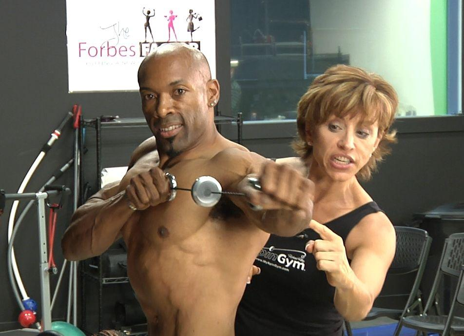
What's New? · November 25, 2015Men LOVE SpinGym
This could be one of my FAVORITE reviews on SpinGym – found on Amazon A guy who loves the Forbes Riley Spin Gym!! By PMG on March 24, 2011 I have been using the Spin Gym this past…
 Behind the Scenes · Forbes Living Tv · November 24, 2015
Behind the Scenes · Forbes Living Tv · November 24, 2015Lola Jeans Make you look SKINNY!
Magic – I put the jeans on and wow – I look like I lost 10 pounds! Also at my age, I would never consider wearing “skinny” tight legged jeans — well I have found my dream pair. We…
 Behind the Scenes · Forbes Living Tv · November 24, 2015
Behind the Scenes · Forbes Living Tv · November 24, 2015BeBe & Bella Makes YOU look Glam!
Power Among Sisters – I love Linda and Allison Krebs energy and passion – and they even had mom on the set. Probiotic Skincare Benefits |BeBe & Bella.com As soon as you begin usin…
 Throwback with Forbes · November 18, 2015
Throwback with Forbes · November 18, 2015Let’s Look Back!
Journal · November 12, 2015Forbes on Hallmark’s Home and Family
What a treat to appear on Hallmark’s Home and Family with my old friends Mark and Christine. We talked health and fitness, got everyone SpinGyming and a blast! Thank you Woody Fra…
Healthy Living · Healthy Living Tips · November 3, 2015Innovative Turkeys!
What a fun healthy and colorful alternative for the Thanksgiving Holiday season!
 Behind the Scenes · Forbes Living Tv · Let's Talk Business · Work With Forbes · October 29, 2015
Behind the Scenes · Forbes Living Tv · Let's Talk Business · Work With Forbes · October 29, 2015FORBES LIVING TV
This show is a Dream come true. Shot in my television studio in St Petersburg, it was created to give small business and entrepreneurs a shot at being successful. Our clients get …
Daily Inspiration · October 29, 2015I Can and I Will!
There always comes a time when you want to give up – sadly you are usually just inches away from the gold when you stop – its what separates the true athletes and success stories …
 Behind the Scenes · Forbes Living Tv · October 24, 2015
Behind the Scenes · Forbes Living Tv · October 24, 2015Forever Flawless – Looking Glam!
They say Diamonds are a girls best friend… and I think they are right. When it comes to skincare Forever Flawless has to be THE most glamorous I have ever seen. Great Quality and …
Business · Let's Talk Business · Podcasts · Work With Forbes · October 15, 2015CJ Coolidge loves Forbes Riley…
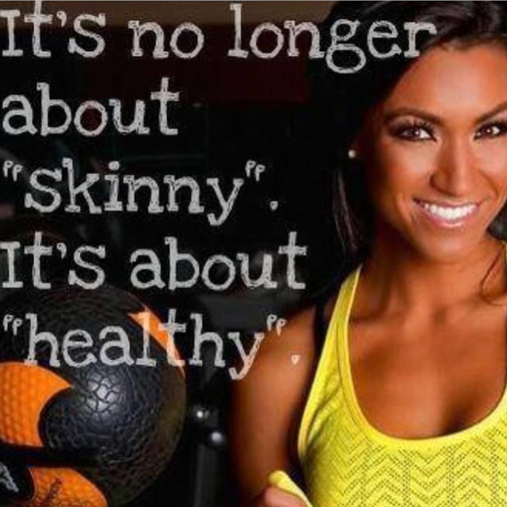
Daily Inspiration · September 29, 2015Skinny is NOT the Goal!
Body image – what do you believe you should and perhaps can look like? Long and lean, toned and strong, bigger, littler – its a bit confusing. My thought is always health. Build m…
What's New? · September 26, 2015Jack Lalanne’s Birthday
Jack would have been 101 and he truly believed he could have made it — he certainly gave it a valiant effort Here are Eight Lessons from the Life and Work of Jack LaLanne… enjoy H…
 Behind the Scenes · Forbes Living Tv · September 24, 2015
Behind the Scenes · Forbes Living Tv · September 24, 2015Forbes Riley fights Rhonda Roussey
Okay, maybe not Rhonda but care of 9Round Boxing Gyms I got to go head to head with my #amazing Forbes Living executive producer, Lisa Vranken in my St Petersburg, Studio Who won?…
Forbes Favorites · September 23, 2015Have you heard about Waist Shapers?
The latest craze for women to have a more hour glass figure is waist trainer – have you heard about this? In the old days women wore corsets and we remember that famous seen from …
Home Shopping · What's New? · September 20, 2015Forbes Riley + HSN
SpinGym News · September 20, 2015Fit Girls of SpinGym
My Amazing Team June Kittay, Yvette Feinberg, Cara Dubov from 22 to 62 — SpinGym really is breaking the age barrier when it comes to fitness!~
SpinGym · SpinGym News · September 20, 20155 Minutes Daily!
www.ShopForbesRiley.com
SpinGym · SpinGym News · September 20, 2015SpinGym in the News
Daily Inspiration · September 16, 2015Self Love
Fall in love with yourself first, determine your own happiness, your own standards on living your life, because you are the gardener of your own soul. And if you’re having a bad d…
Daily Inspiration · September 15, 2015Cup of Sunshine
Make sure you drink from your FABULOUS ‘cup of sunshine’ this beautiful morning before stepping out into the world beyond your doorstep. A cup to start your day is filled with ins…
Daily Inspiration · September 14, 2015Start the Day with a Smile
Why not start the day with a smile on your face and a happy rhythm to dance to for your soul to embrace. No matter how you’re feeling, a smile and one small positive thought in th…
Daily Inspiration · September 11, 2015Our Thoughts
Our life is what our thoughts make it and the blatant truth is that stress doesn’t come from external sources like i.e. your work, colleagues, boss, your family or friends, traffi…
Daily Inspiration · September 9, 2015Live Your Own Life
Always carve out your own path, it is your journey, and yours alone. The universe has no restrictions, it is vast and limitless just like you. You place restrictions on the univer…
 Daily Inspiration · September 7, 2015
Daily Inspiration · September 7, 2015It’s Not Selfish To Love Yourself
If you want happiness then understand that it starts with you – not with your relationships, not with your job, not with your money but you. Your internal state, your thoughts aff…
 Healthy Living · Healthy Living Tips · September 7, 2015
Healthy Living · Healthy Living Tips · September 7, 2015Metabolic Boosting Foods!
Body Builders will tell you that a strong, lean body is MADE in the kitchen, not the gym. Well here’s an exciting bonus – certain food CAN boost your metabolism and help you burn …
 Healthy Living · Healthy Living Tips · September 5, 2015
Healthy Living · Healthy Living Tips · September 5, 2015Travel – Its Good for You!
Traveling around the world is one of the HEALTHIEST things you can do – and I bet you never thought about it like before… Good health is as much mental as it is physical. Below yo…
SpinGym News · September 5, 2015Where to SpinGym? EVERYWHERE!
SpinGym truly is the MOST versatile Fitness Product on the Planet What makes SpinGym so unique is that it is compact, portable and versatile. Whether you are going for a walk or s…
 Travel · Travel Tips · Travel With Forbes · September 5, 2015
Travel · Travel Tips · Travel With Forbes · September 5, 2015You Should be HERE!
This sign represents SO many things – think about the amazing memories you have from travel – I personally have toured Europe on my own with a backpack when I was just 21, taken m…
Travel · Travel With Forbes · September 5, 2015Africa
One of the most adventures I ever went on was a 6 week trip to Africa. I have dear friends who live in Lake Navaisha and thought it would be a great Christmas/New Years (1998-1999…
Daily Inspiration · September 2, 2015Happiness
DREAM IT, BELIEVE IT, ACHIEVE IT! Hope you enjoy – get inspired and please leave a comment below
Daily Inspiration · My Life in Video · September 1, 2015Forbes in Action
This video from the Secret Knock convention in Chicago is definitely one of the most Inspiring interviews I have EVER given! Spend some time here, and I promise that you will be c…
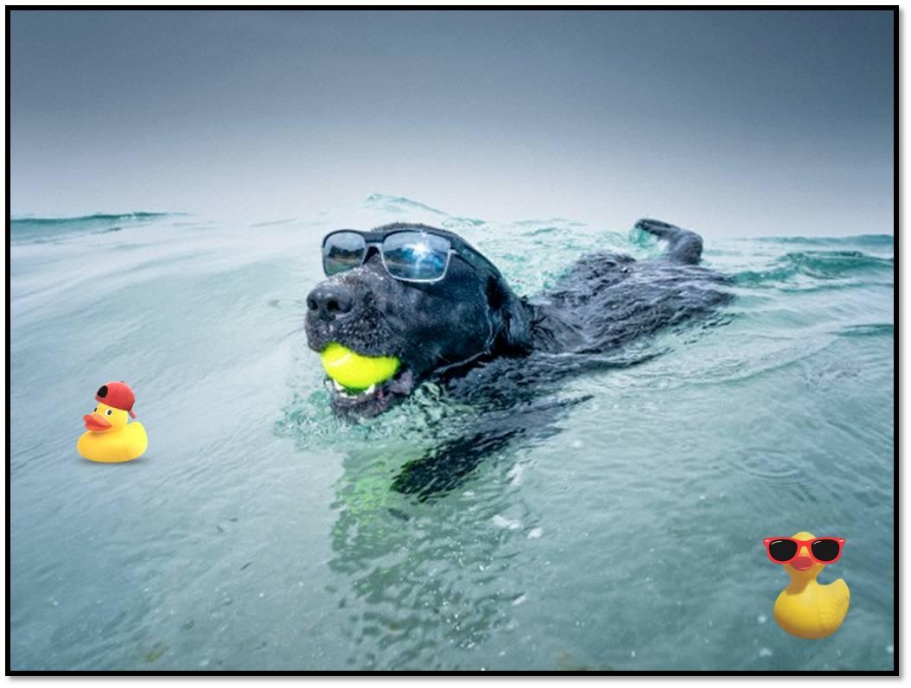
Daily Inspiration · August 31, 2015Get our of your comfort zone
Once you get rid of the idea that you must please other people in order to feel accepted before you please yourself, and begin to follow your own instincts, only then can you be s…
Daily Inspiration · August 30, 2015Tune into your senses
Waking up to see another day is a blessing – don’t take it for granted – make it count! If you think you don’t have any blessings then look at yourself and remember your heart is …
 Behind the Scenes · Forbes Living Tv · August 29, 2015
Behind the Scenes · Forbes Living Tv · August 29, 2015Getting Gorgeous takes Work!
Some say beauty is only skin deep – I say thank God for Mascara! I am always amazed at how glamorous make-up can make you look and though for some the natural look works – not for…
Daily Inspiration · Let's Talk Business · August 29, 2015Steve Jobs
Music is many things to many people, but to entrepreneurs it can be an essential success tool. According to a recent study “Brain imaging studies have shown that various parts of …
Daily Inspiration · Let's Talk Business · August 28, 2015Les Brown
I had the amazing pleasure of meeting Les Brown at a private dinner with myself and NLP Guru Christopher Howard. At the time I didn’t really know much about Les but what a live ch…
SpinGym · SpinGym News · August 25, 2015SpinGym in the New
Praised by Fox News as the hottest Fitness Sensation, it continues to grow in popularity! www.ShopForbesRiley.com
 SpinGym · SpinGym News · August 24, 2015
SpinGym · SpinGym News · August 24, 2015Team SpinGym Kansas City
So proud of my students in the Kansas City Train the Trainer, SpinGym certification program. Dedicated, fun and so passionate.
 About SpinGym · Forbes & Friends · SpinGym News · August 22, 2015
About SpinGym · Forbes & Friends · SpinGym News · August 22, 2015Dr Bob Proctor
Have you seen or read The Secret and its Law of Attraction? Well I have been a believer forever and imaged how impacted I was when one of the stars of the movie, Dr. Bob Proctor n…
SpinGym News · August 15, 2015Where to SpinGym? EVERYWHERE!
SpinGym truly is the MOST versatile Fitness Product on the Planet What makes SpinGym so unique is that it is compact, portable and versatile. Whether you are going for a walk or s…
Travel · Travel Tips · Travel With Forbes · August 5, 20155 Fun Travel Tips
I got the travel bug from my family and we would LOVE to take trips together. Back when I was little we didn’t have a lot of money so we would travel mostly in the US and for a wh…
Daily Inspiration · What's New? · July 30, 2015Don’t Talk~ DO!!
SpinGym News · July 28, 2015SpinGym Jr.
If you’re just getting back from an injury or perhaps you are older and you need to take it easy but excited to get started back to your fit and healthy self – consider SpinGym Jr…
Travel · Travel With Forbes · What's New? · July 7, 2015White Water Rafting
This trip was the 2nd time my twins and I had been river rafting and it was FUN though a bit colder and rainer than the first time in Colorado. We were at a Dude Ranch in Tennesse…
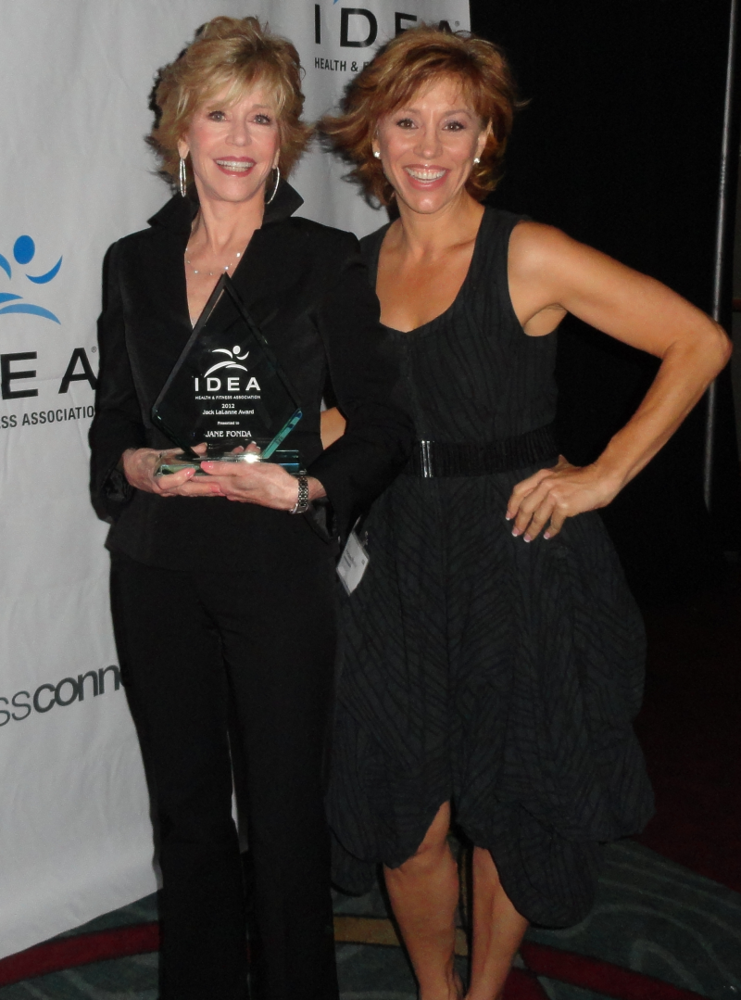
Forbes & Friends · June 28, 2015Is Forbes Riley related to Jane Fonda?
Elaine Lalanne, Jane Fonda, Forbes Riley3 Generations of Happy, Healty, Fit Women — this is so inspiring to me! Jane Fonda Biography Jane Fonda is an American actress best known f…
Travel Tips · June 5, 2015BEST LUGGAGE!
BEST LUGGAGE Ultra light-weight construction Reinforced corners defend against the harshest travel conditions Multiple exterior and interior pockets keep you well organized Push b…
Forbes & Friends · Forbes Products · SpinGym News · What's New? · May 28, 2015Forbes Flawless Anti-Wrinkle System
.fusion-button.button-1 .fusion-button-text, .fusion-button.button-1 i {color:#78104b;}.fusion-button.button-1 {border-width:1px;border-color:#78104b;}.fusion-button.button-1 .fus…
Healthy Living Tips · SpinGym · SpinGym News · February 27, 2015SpinGym – Doctor Endorsed
TOP FIVE MEDICAL REASONS TO EXERCISE WITH SPINGYM written by Dr. L. Krudo When I first met Forbes Riley I was immediately struck by her passion and commitment. Her knowledge of th…
 SpinGym · February 12, 2015
SpinGym · February 12, 2015SpinGym Class rocks
Here is a group of Nurses that my daughter and I both taught our full day SpinGym training certification. These are such hard working devoted men and women. Surprisingly they knew…
2014
Hosting an Infomercial in my PJ’s
This was such a treat to host this show in my pajamas and then go out in the park and ask people what pillow they use! How important is choosing the correct pillow? Getting good q…
Travel · June 19, 2014Family Trip to Puerto Rico
The Twins School Sponsored a Family Trip to Puerto Rico There were 20 12 years olds and 10 of us parents for a week traipsing through Puerto Rico – rainforests, beaches, forts and…
2003

1980

1965
1960

No stories match. Try another word or category.